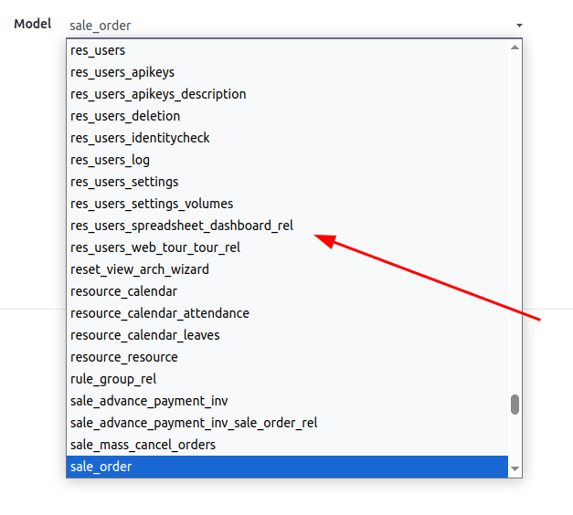

Stop dumping data. Start saving money. Intelligently export filtered Odoo data and specific columns directly to Google BigQuery.
Our connector is engineered to overcome the most common frustrations with large-scale data exports and analytics.
Export only the records and columns you need to drastically cut storage and query expenses.
Get cleaner datasets in BigQuery faster by being selective about what you send from Odoo.
Leverage the full power of BigQuery for BI, AI, and deep machine learning insights.
Use standard Odoo domain filters to select exactly which records to export. Sync only confirmed sales orders, invoices from the last quarter, or partners from a specific country.
Choose exactly which fields to send. This targeted approach accelerates exports and directly reduces your BigQuery storage and query costs.
Our connector uses an official Google Cloud Service Account for a robust and secure integration. All configuration is handled inside Odoo.
An Odoo instance, a Google Cloud account with BigQuery enabled, and a Service Account with "BigQuery Data Editor" and "Job User" roles.
Yes. The connector can access and export data from any standard or custom model within your Odoo database, including any custom fields.
By default, yes. The connector uses `WRITE_TRUNCATE` to replace the table on each sync, ensuring it's a perfect replica of the source Odoo data.